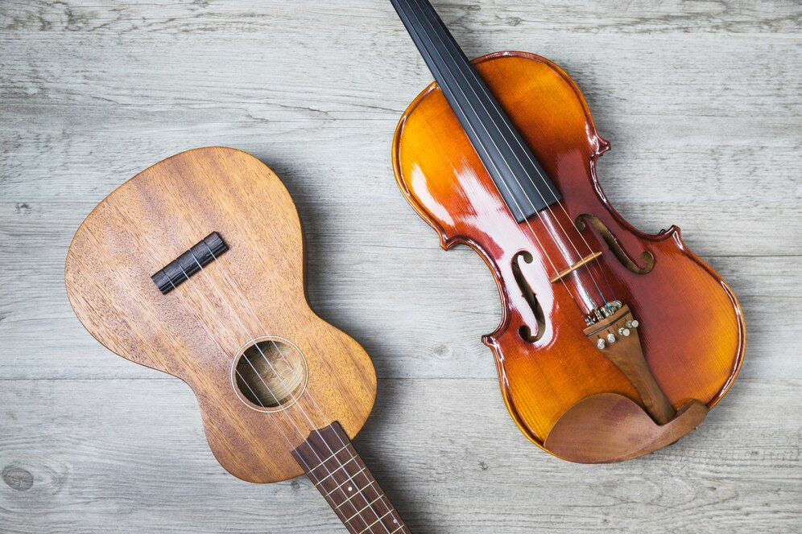
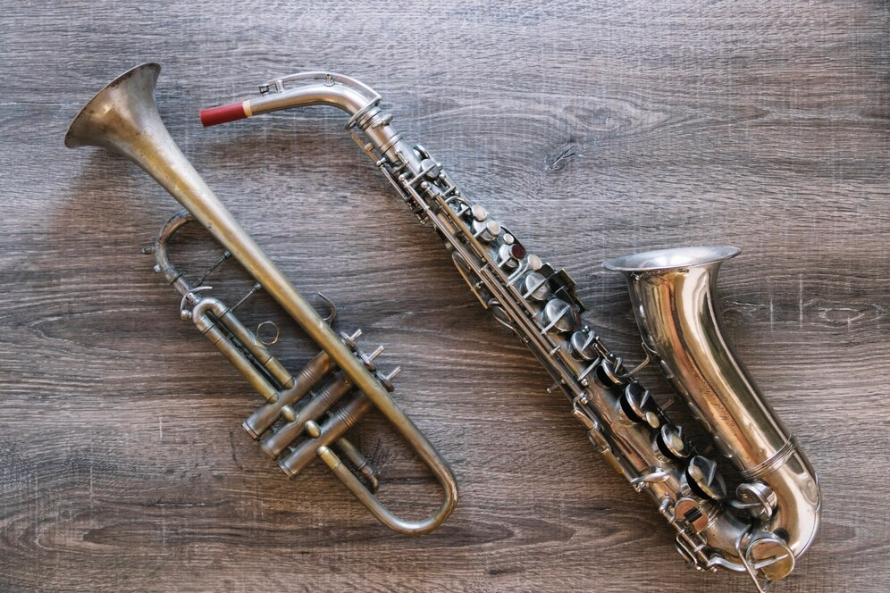
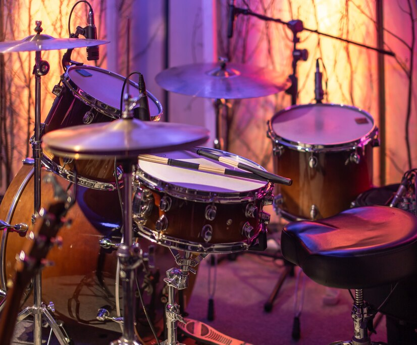
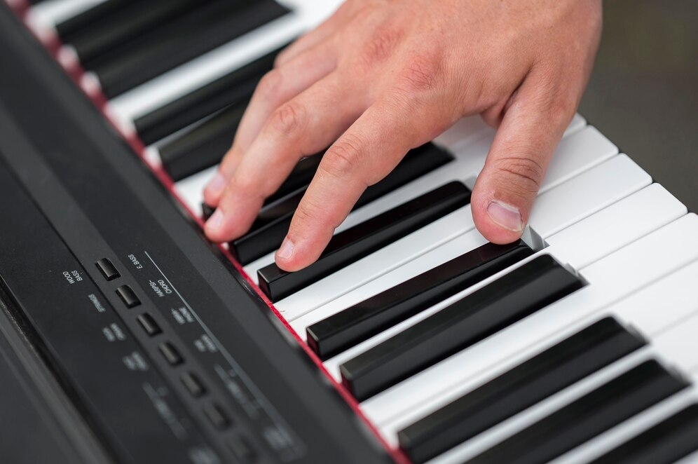
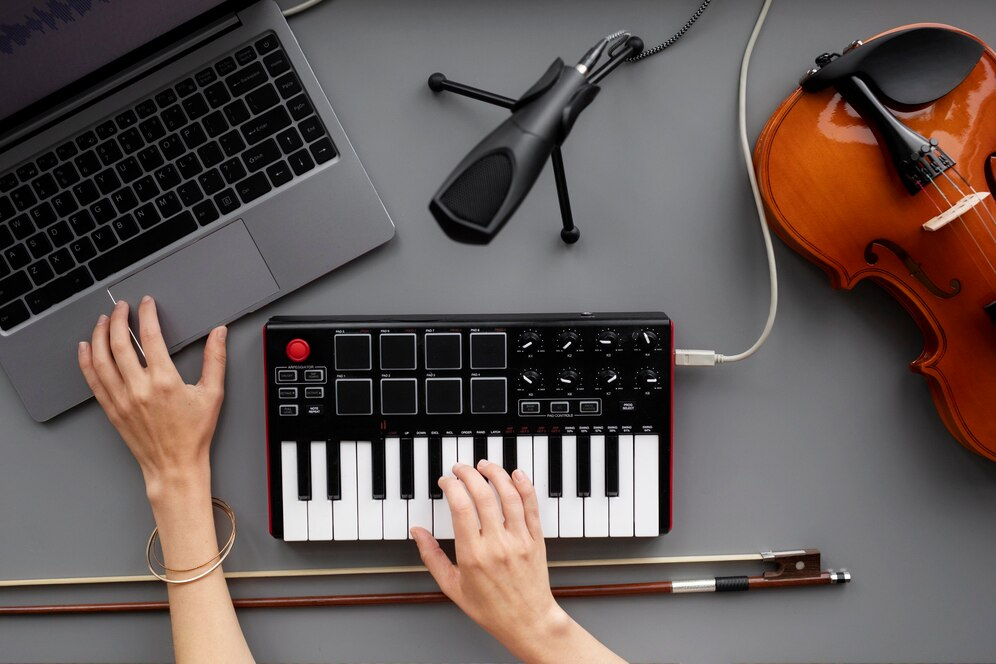
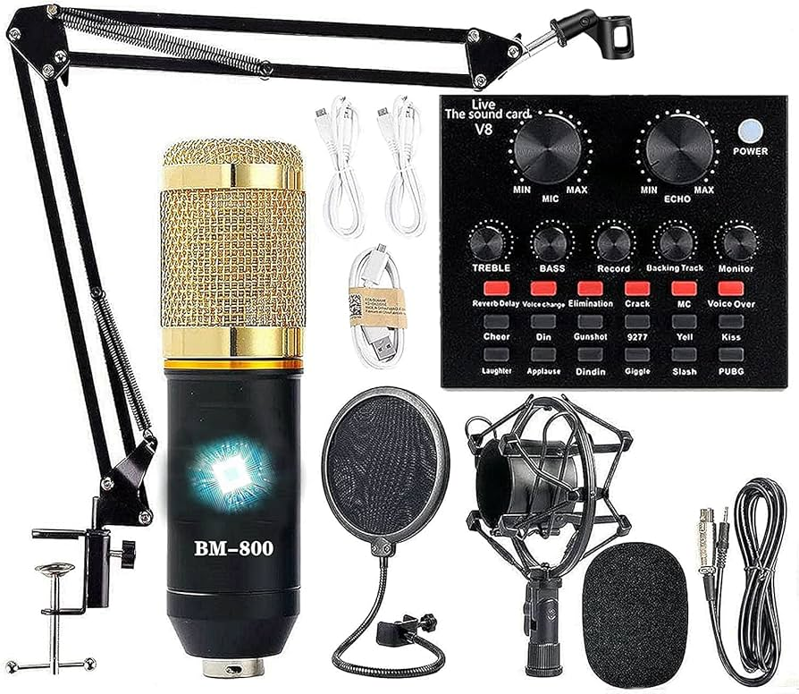
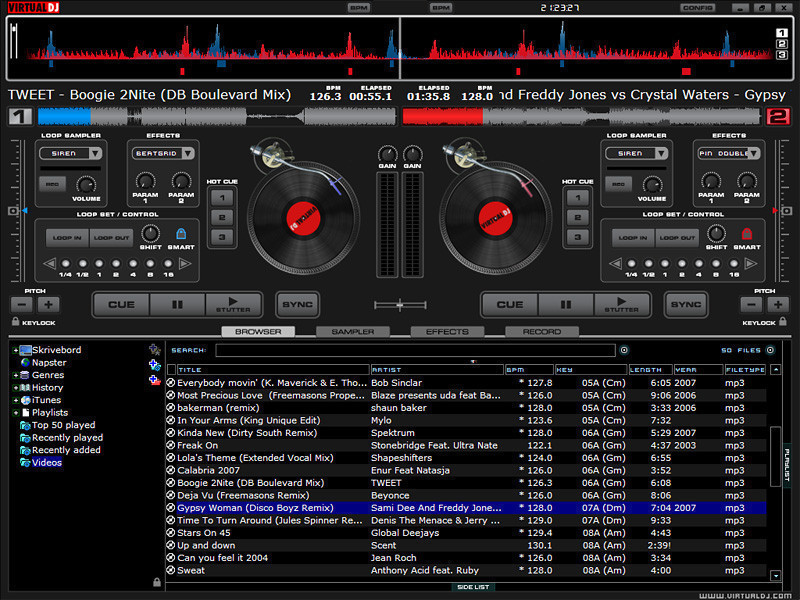
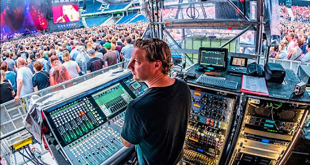

Descubre Más Sobre Música y Audio Profesional
Encuentra Tu Instrumento
Instrumentos de Cuerda
Los instrumentos de cuerda, como la guitarra, el violín, el cello y el contrabajo, son conocidos por su versatilidad y riqueza tonal. Estos instrumentos permiten una amplia gama de estilos musicales, desde la clásica y el folk hasta el rock y el jazz. Si disfrutas de la expresión emocional a través de la música y te atrae la idea de tocar melodías y acompañamientos, un instrumento de cuerda podría ser ideal para ti. Además, la práctica de estos instrumentos puede desarrollar habilidades en la lectura de partituras y en la técnica de mano.
Instrumentos de Viento
Los instrumentos de viento, como la flauta, el saxofón, la trompeta y el clarinete, son conocidos por su capacidad para producir sonidos variados y expresivos. Estos instrumentos requieren control respiratorio y técnica de embocadura, lo que puede ser muy gratificante para quienes buscan desarrollar una conexión íntima con el aire y el sonido. Si te atrae la idea de tocar en bandas, orquestas o en solitario, los instrumentos de viento ofrecen oportunidades para explorar diferentes géneros y técnicas.
Instrumentos de Percusión
Los instrumentos de percusión, como la batería, el xilófono, el tambor y los timbales, se destacan por su capacidad para establecer ritmo y energía en la música. Estos instrumentos no solo son fundamentales en casi todos los estilos musicales, sino que también te permiten desarrollar un fuerte sentido del ritmo y la coordinación. Si disfrutas de la idea de mantener el ritmo y aportar energía a las actuaciones, un instrumento de percusión podría ser una excelente elección.
Instrumentos de Tecla
Los instrumentos de tecla, como el piano, el órgano y el sintetizador, son conocidos por su capacidad para tocar múltiples notas al mismo tiempo, lo que permite una amplia gama de expresiones musicales. Estos instrumentos son esenciales en muchos géneros, desde la música clásica hasta el pop y la música electrónica. Si te interesa la composición, el acompañamiento o la exploración de diferentes sonidos y texturas, un instrumento de teclado te proporcionará una base sólida y versátil.
Instrumentos Electrónicos
Los instrumentos electrónicos, como las guitarras eléctricas, los sintetizadores y los controladores MIDI, ofrecen una gama infinita de posibilidades sonoras y efectos. Estos instrumentos permiten la experimentación y la creación de sonidos únicos que no se encuentran en los instrumentos tradicionales. Si te apasiona la tecnología y quieres explorar nuevas fronteras en la música, los instrumentos electrónicos te permitirán desarrollar un enfoque creativo y moderno.
Conoce Más Sobre Audio Profesional
Equipos de Grabación
Los equipos de grabación son esenciales en cualquier estudio de audio profesional. Esto incluye micrófonos, interfaces de audio, y sistemas de monitoreo como altavoces de estudio y auriculares de alta calidad. La elección del equipo adecuado puede influir significativamente en la calidad de la grabación. Si estás interesado en producir música o trabajar en la grabación de audio, invertir en buenos micrófonos y una interfaz de audio confiable te permitirá capturar el sonido con precisión y claridad. Además, un buen sistema de monitoreo te ayudará a escuchar tus mezclas de manera detallada y precisa.
Software de Edición y Mezcla
El software de edición y mezcla es el corazón de la producción musical moderna. Programas como Pro Tools, Ableton Live, y Logic Pro ofrecen herramientas avanzadas para la edición, mezcla y masterización de audio. Estos programas permiten a los profesionales manipular el sonido, aplicar efectos y ajustar niveles para lograr la mezcla perfecta. Si deseas involucrarte en la edición y mezcla de audio, familiarizarte con estos programas y aprender a usar sus funciones te dará una ventaja significativa en el campo.
Ingeniería de Sonido en Vivo
La ingeniería de sonido en vivo se centra en la gestión del audio durante eventos en directo, como conciertos y presentaciones en vivo. Esto incluye la mezcla en tiempo real, la gestión de sistemas de sonido en el lugar y la solución de problemas técnicos. Si te atrae la idea de trabajar en eventos en vivo, aprender sobre los diferentes tipos de micrófonos, sistemas de PA (sonido en vivo) y técnicas de mezcla en directo es crucial. La experiencia en entornos en vivo puede ayudarte a desarrollar habilidades para manejar situaciones imprevistas y garantizar un sonido de alta calidad durante las actuaciones.